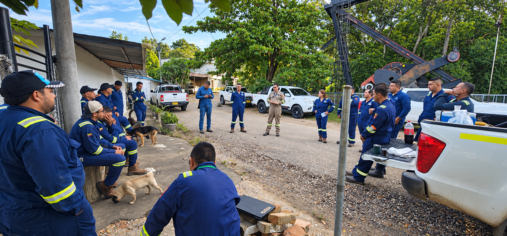

Supervisión técnica en campo
Liderazgo de cuadrillas y verificación del mantenimiento en BT, MT y AT.
Dominio de metodologías de mantenimiento y gerencia de sistemas eléctricos de potencia al servicio del personal técnico. Nuestro alto valor es liderar cuadrillas y contratistas en BT, MT y AT: competencias, coordinación, control de riesgos, calidad de ejecución y sólidos conocimientos HSE con referencia a la Resolución 5018 de 2019, según su alcance.
Supervisión del personal, control del riesgo eléctrico y prácticas de trabajo seguro según el alcance aplicable. Ver título y alcance →

Liderazgo de cuadrillas y verificación del mantenimiento en BT, MT y AT.
Competencias, responsabilidades, contratistas y condiciones seguras de ejecución.
Selectividad, tiempos de despeje y criterios de protección.
Análisis de energía incidente y criterios de seguridad aplicables.
Evaluación de redes, equipotencialidad y desempeño del sistema.
Armónicos, desbalance, factor de potencia y perturbaciones.
Revisión técnica, criticidad, condición y requerimientos de mantenimiento.
Criticidad, análisis de fallas, disponibilidad e indicadores de mantenimiento.
Los hallazgos se interpretan con carga, condiciones ambientales, estado del equipo, antecedentes, criticidad y evidencia complementaria disponible.
Aplicamos RCM, RCA, IMC, FMEA y mantenimiento preventivo y predictivo. Gestionamos el ciclo de mantenimiento en SAP PM y coordinamos paradas con control de alcance, recursos, calidad y resultados. Apoyo técnico a trámites ante el operador de red y el CND según el alcance regulatorio de cada activo.
El servicio se estructura con las referencias técnicas y reglamentarias que correspondan a la instalación, actividad, cliente y edición vigente.